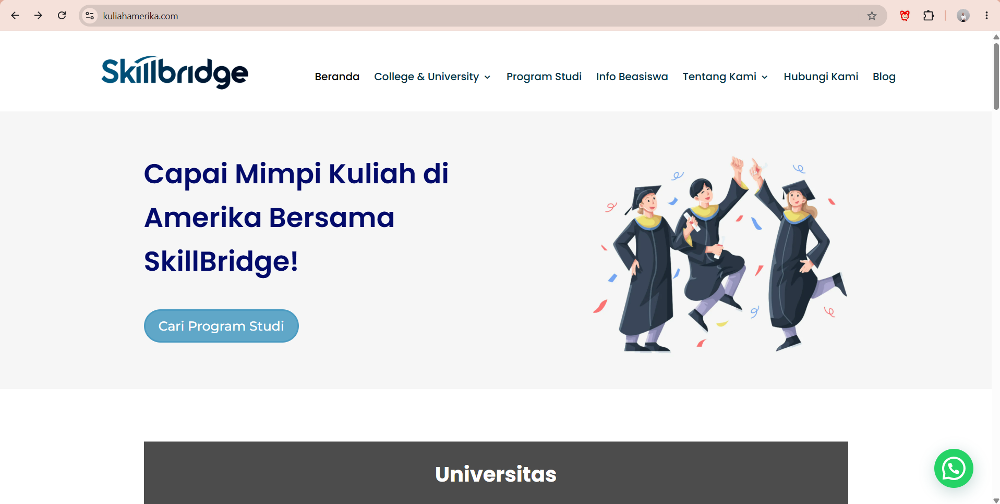
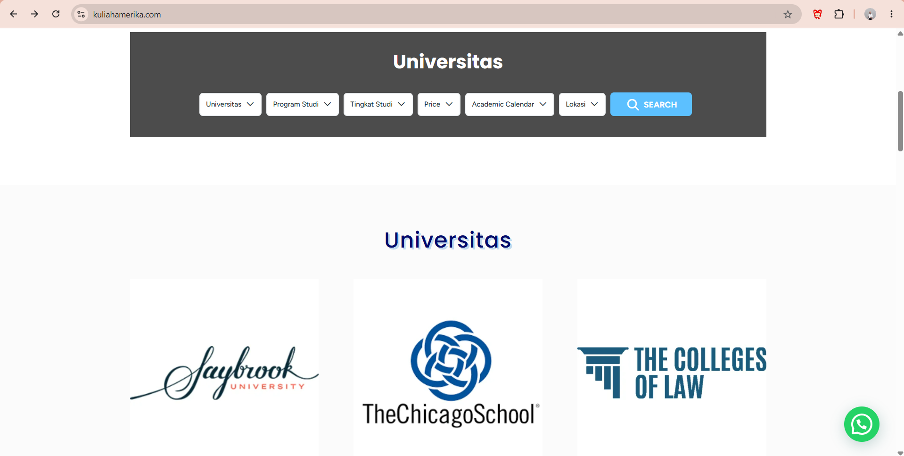
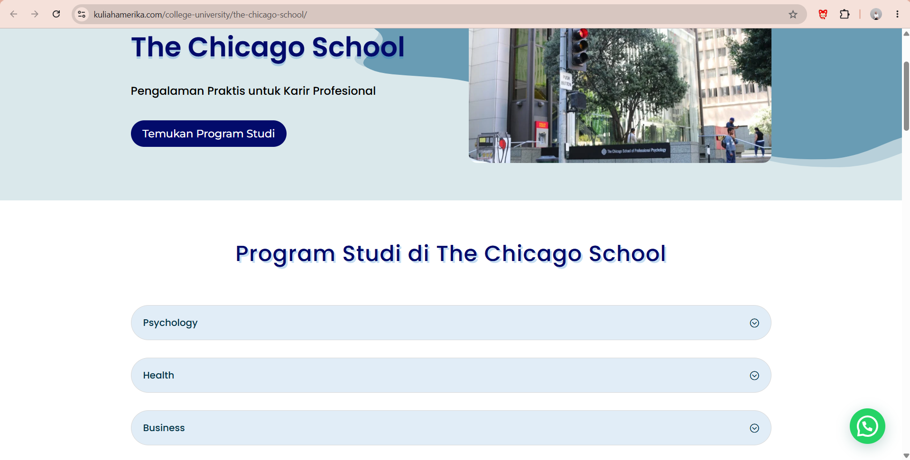

Fresh graduate in Internet Technology Engineering from Universitas Gadjah Mada. Experienced in building secure systems, analyzing requirements, developing web applications, and ensuring software quality through hands-on projects and bootcamp training.
I'm a fresh graduate in Internet Technology Engineering from Universitas Gadjah Mada (GPA 3.69) with hands-on experience across cybersecurity, system analysis, web development, and software quality assurance.
I enjoy working across the full software lifecycle — from analyzing requirements and designing systems, to building and testing applications. My strongest project, PDPGuard, demonstrates my ability to lead a team, architect a system from scratch, and deliver measurable results under real competition conditions.
Actively seeking opportunities in cybersecurity, system analysis, QA, and web development — open to full-time roles, internships, and relocation.
A web-based platform for automated API security assessment built using Python (Flask) and PostgreSQL. Led as Project Lead and Backend Lead, managing full SDLC from requirements analysis, system architecture design, development, testing, to documentation and stakeholder presentation. Achieved Top 8 out of 40 teams in the FYEP Standard Chartered Foundation Bootcamp.
A full-stack web application built with Python (Flask) as backend, ReactJS as frontend, and MySQL as database — designed to automate the penetration testing pipeline for known CVE vulnerabilities with real-time monitoring and automated PDF reporting.
Built a full company website from the ground up using WordPress and the Divi Theme Builder, as a Web Developer in the Digital Marketing Division. The site helps prospective students explore US universities and study programs, complete with search/filter functionality and dedicated university profile pages.



An end-to-end QA project on Restful-Booker-Platform, a public booking-system sandbox built for testing practice — covering manual/exploratory testing, formal documentation, and test automation with Playwright. Built to demonstrate the same testing methodology used in my role as SQA at a healthcare software company — test planning, test case design, bug reporting, and automation — on a public application so the process can be shared openly without exposing confidential client work.
A structured reconnaissance and enumeration assignment against Luno's public Bugcrowd program, covering asset mapping and technology fingerprinting to understand the target's attack surface. Documented following a professional pentest-report format — methodology, findings, and per-area risk analysis.
A 30-level capture-the-flag write-up completed as part of CyberSec Labs by Visionet, using a custom VM inspired by OverTheWire Bandit. Covers core Linux skills — file permissions, hidden files, metadata analysis, hashing, encoding, and archive/compression formats. Each level documents the exact reasoning and command used to reach the flag.
A complete write-up covering all 33 levels (0–32) of OverTheWire Bandit, one of the most widely used wargames for practicing Linux command-line and privilege escalation fundamentals — progressing from basic file navigation to network exploitation, cron job abuse, and Git repository forensics.
An end-to-end VAPT engagement against a Metasploitable 2 VM in an isolated VirtualBox NAT network, from reconnaissance through exploitation and post-exploitation. Identified and proved a critical remote code execution vulnerability (CVE-2011-2523) in the FTP service, gaining root access and documenting the full attack chain in a formal report.
A dynamic application security testing (DAST) engagement using OWASP ZAP against publicly available intentionally-vulnerable test sites, producing a full vulnerability matrix across risk levels and a prioritized remediation plan.
A 5-challenge Windows forensics lab investigating a suspicious local account, tracing its creation and first login, and uncovering a disguised scheduled-task persistence mechanism — all using native PowerShell and CLI tooling, without third-party forensic software.
A set of 4 practical network engineering challenges completed against live simulated servers and switches, covering subnetting design, switch configuration, and SSH-based network pivoting techniques to reach isolated hosts.
💡 Klik sertifikat untuk melihat file